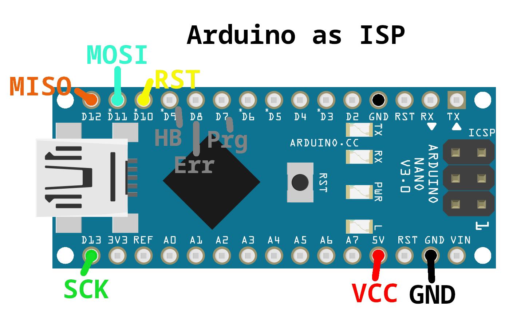

ArduinoISP Flasher
Mit diesem Tool kann man ArduinoISP auf einen Arduino Nano flashen.
Damit kann man Atmel AVR Mikrocontroller programmieren.
Der alte Bootloader ist der, der auf Arduino Nanos vor 2018 installiert war.
Dieser ist auch oft noch auf Chinesischen Arduino Nano Klonen zu finden.

Zurück